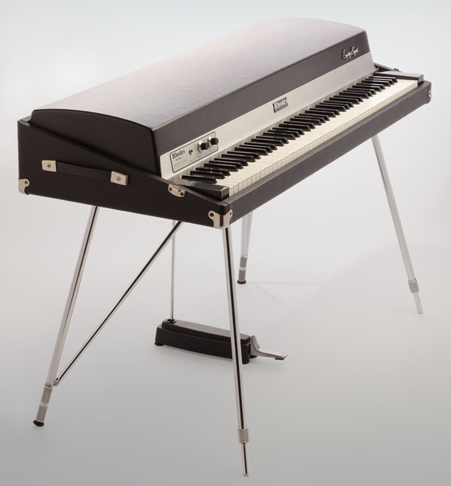
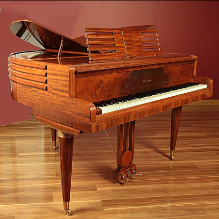

There are dozens of different potatoes varieties.
They are usually described as early, second early, and maincrop potatoes.
The Rhodes piano is a classic and iconic electric piano that has left an indelible mark on the world of music since its introduction in the 1960s. Invented by Harold Rhodes, this electromechanical keyboard instrument became synonymous with the warm, lush sounds of jazz, rock, and popular music. The distinctive sound of the Rhodes is achieved through a combination of hammers striking metal tines, creating a unique and expressive timbre that has been favored by artists ranging from Herbie Hancock and Stevie Wonder to The Doors and Radiohead. The instrument's portability and versatility made it a staple in recording studios, live performances, and countless hit records. Despite evolving technology and the advent of digital keyboards, the Rhodes piano remains a beloved and sought-after instrument, cherished for its timeless, soulful tones that continue to captivate musicians and audiences alike.
| Photo | Description | Price |
|---|---|---|
|  | The Rhodes piano is a classic and iconic electric piano that has left an indelible mark on the world of music since its introduction in the 1960s. Invented by Harold Rhodes, this electromechanical keyboard instrument became synonymous with the warm, lush sounds of jazz, rock, and popular music. The distinctive sound of the Rhodes is achieved through a combination of hammers striking metal tines, creating a unique and expressive timbre that has been favored by artists ranging from Herbie Hancock and Stevie Wonder to The Doors and Radiohead. The instrument's portability and versatility made it a staple in recording studios, live performances, and countless hit records. Despite evolving technology and the advent of digital keyboards, the Rhodes piano remains a beloved and sought-after instrument, cherished for its timeless, soulful tones that continue to captivate musicians and audiences alike. | $14000 |
|  | The Wurlitzer piano is a vintage electric piano. | $1600 |
Marathon training is a comprehensive and rigorous preparation process aimed at equipping runners for the daunting challenge of completing a 26.2-mile race. This training regimen typically spans several months, emphasizing a gradual increase in mileage, cross-training, and targeted workouts to enhance endurance, speed, and overall fitness. Runners often follow a structured schedule, incorporating long runs, interval training, and recovery days to balance the physical demands and minimize the risk of injury. Nutrition and hydration are crucial components of marathon training, ensuring that the body receives the necessary fuel for sustained effort. Mental resilience is also fostered during training, as marathon runners must cultivate the determination and focus required to conquer the physical and psychological hurdles of the race. The culmination of these efforts is not just the physical achievement of completing the marathon but also the personal growth and sense of accomplishment that come from the dedication and discipline inherent in the training process.
foo bar baz baz baz
Guitar